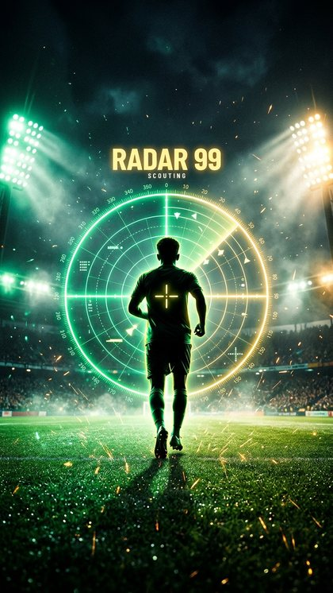

Tıkla, algoritma en ilginç yeteneği bulsun, YouTube'a hazır olsun.
RADAR 99, 18.405 EA FC 26 ve 50.149 Transfermarkt 2026 kaydı üzerinden en yüksek merak puanlı gizli genç yeteneği veya kıran kırana 1v1 düelloyu otomatik seçer; 6/6 QA + SEO/GEO/AEO paketiyle tek tıkla @radar99futbol'a hazırlar.
Tek Tıkla Üret & YouTube Studio'ya Gönder
🎬 Hazır Videolar & Tek Tıkla YouTube Yayın Merkezi
| Oyuncu / Kulüp | Mevki | Yaş | OVR → POT | Viral |
|---|
RADAR 99 · YouTube, TikTok & Reels Viral Kanal Kiti
Görsellere tıklayıp tam ekran incele veya aşağıdaki butonlarla yüksek çözünürlüklü YouTube Studio dosyalarını tek tıkla indir.



YouTube Hakkında & Biyografi (Kopyala-Yapıştır)
Avrupa devleri kapmadan önce geleceğin yıldızlarını ilk sen tanı! 📡⚽ RADAR 99, 18.405 EA FC 26 ve 50.149 güncel piyasa verisini tarayarak kimsenin henüz duymadığı 16–20 yaş gizli genç yetenekleri, Oyun DNA'sı eşleşmelerini ve 1v1 Wonderkid Düellolarını her gün 45 saniyede önüne getirir. 🕵️ Her Gün 19:00 → Gizli Genç Yetenek Dosyası (Shorts) ⚔️ Çarşamba & Cuma → 1v1 Wonderkid VS Düellosu 🎬 Pazar 20:00 → Haftanın 5 Gizli Cevheri (16:9 Özel Bölüm) 👇 Yorumlara "sıradaki yeteneği" yaz, Radar 99'u birlikte yönetelim!
Kanal Etiketleri & 20 sn Fragman Metni
radar 99, scout radarı, genç yetenekler, wonderkids 2026, gizli yetenekler, futbol scouting, ea fc 26 wonderkids, kariyer modu genç yetenekler, transfer hedefleri, süper lig genç yetenekler, futbol shorts, 1v1 futbol düello, kim bu futbolcu, gelecek yıldızlar
💻 Özel PC / Cloudflare Tunnel Stüdyo (Önerilen · 0 Actions Dakikası)
GitHub Actions dakikan bitse bile %100 gizli, tamamen ücretsiz ve sınırsız video üretip "Dosya seç" olmadan tek tıkla YouTube'a yükle! PC'nde RADAR99_BASLAT.bat açtığında site otomatik bağlanır; telefondan yönetmek için RADAR99_TUNNEL_BASLAT.bat çalıştırıp çıkan https://...trycloudflare.com adresini aşağıya yapıştır.
RADAR99_BASLAT.bat (Windows) veya ./radar99_baslat.sh (Mac/Linux) çalıştır — site 127.0.0.1:8765 bağlantısını otomatik yakalar!
Windows (PC): RADAR99_BASLAT.bat Windows (Telefon): RADAR99_TUNNEL_BASLAT.bat Mac/Linux (PC): ./radar99_baslat.sh Mac/Linux (Tel): ./radar99_baslat.sh --tunnel
2. Credentials → Create OAuth Client ID (Desktop app) → JSON indir.
3. Dosyayı proje köküne
client_secrets.json olarak kaydet (Private repo dışı / gitignored).4. İlk yüklemede Google iznini 1 kez onayla → sonrası sıfır "Dosya seç", %100 tek tık!
🤖 Günlük Gizli YouTube Otopilot (v5.1 · 0 Actions · %100 İz Bırakmaz)
PC'nde arka planda sessizce her gün 18:15'te gerçek portreli viral Short/Düello üretir, 6/6 Kalite Kapısından geçirir, FFmpeg ile tüm dosya metadata izlerini siler (-map_metadata -1) ve 19:00 TRT Prime-Time'a zamanlayarak doğrudan YouTube kanalına yükler.
Sal: ⚔️ 1v1 Kıran Kırana Düello (3-3 / 4-2)
Çar: 💎 5M€ Altı Moneyball Cevheri
Per: ⚔️ 1v1 Aynı Mevki Kapışması
Cum: 🌎 Güney Amerika / Balkan / İskandinavya
Cmt: ⚔️ Hafta Sonu Dev 1v1 Wonderkid VS
Paz: 🔥 ViralRank #1 Haftanın Gizli Cevheri
• MP4 Metadata Temizliği: Yüklemeden önce FFmpeg
-map_metadata -1 -fflags +bitexact.• Gerçek Yüz Zorunluluğu: Gerçek portresi doğrulanmayan oyuncu elenir; 180 gün tekrar kilidi.
• Doğru Kategori & SEO: Spor (17), Türkçe ses/dil etiketi, yerel
.SRT altyazı & 4 dil çeviri.
1) Kanalı 1 kez bağla: Windows: RADAR99_YOUTUBE_BAGLA.bat Mac/Linux: ./radar99_youtube_bagla.sh 2) Günlük otopilotu kur (18:15 TRT): Windows: RADAR99_OTOPILOT_KUR.bat Mac/Linux: ./radar99_otopilot_kur.sh
🔐 Site PIN Kilidi & İzleme Kuyruğu
Dışarıdan girenler "RADAR 99 · Çok Yakında" ekranı görür. Varsayılan PIN: 9999. Aşağıdan kendi tarayıcın için yeni PIN tanımlayabilirsin.
.venv/bin/python pipeline/run_viral_pick.py --mode surprise --upload-youtube --privacy auto_geo
☁️ GitHub Actions Bulut (Opsiyonel · Kota Varsa)
Aylık Private Actions dakikan yenilendiğinde (veya Self-Hosted Runner bağladığında) PC kapalıyken bile bulutta üretmek için opsiyonel olarak kullanabilirsin.
.venv/bin/python pipeline/youtube_uploader.py --export-github-secrets